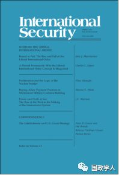

收录于合集

简 介
【作者】 查尔斯·格拉泽（Charles L. Glaser），乔治·华盛顿大学艾略特国际事务学院政治学系教授，主要研究方向为安全与冲突。
【编译】 李雯珲
【校对】 兰星辰 朱文菡
【审核】 丁伟航
【来源】 International Security, Vol. 43, No. 4 (Spring 2019), pp. 51–87, https://doi.org/10.1162/ISEC_a_00343
【期刊】 《国际安全》（International Security）是国际和国家安全领域的同行评议顶级学术期刊。它成立于1976年，由哈佛大学贝尔弗科学与国际事务中心（Belfer Center for Science and International Affairs at Harvard University）编辑，麻省理工学院出版社（MIT Press）每年出版四次。2017年影响力因子为4.135，在“国际关系”类别的85种期刊中排名第2位。

有缺陷的理论框架：为什么自由主义国际秩序理念将美国外交政策引入歧途
A Flawed Framework: Why the Liberal International Order Concept Is Misguided

内容提要
作者认为，自由主义国际秩序（liberal international order，LIO）具有内向性（inward focus）、理论基础薄弱、现状偏好（status quo bias）等缺陷，在其指导下，美国外交政策存在许多问题，具有潜在的危险。 美国外交政策应转向以大战略（grand strategy）为指导。
文章导读
**1
**
什么是自由主义国际秩序
学者普遍认为， 国际秩序是规定国家间主要关系的特定原则、规则和制度 。在关于国际秩序是目的还是手段的争论上，作者认为， 国际秩序是国家实现一定目的的手段，而不是目的本身。 国家可以通过创造一种秩序或加入某种秩序，来实现它们的利益。在创立过程中，秩序是达成某种目的的手段；一旦建立，它就部分地称为了一种约束。在相当长的周期里，拥有足够实力的国家可以推翻秩序，因此，从整个时间框架来看， 秩序是一种手段，而非目的或结果 。
早在特朗普大肆打击美国盟友并挑战国际贸易体系前，美国学者和政治家就对西方国际秩序面临的威胁充满忧虑。近来，关注点又重回大国竞争。他们讨论的国际秩序主要指 自由主义国际秩序 （liberal international order，LIO），有时也称为自由主义霸权秩序（liberal hegemonic order）， 即二战后建立的以美国为主导的秩序体系 。自由主义国际秩序包括北约、美日同盟、自由贸易体系和联合国等。根据自由主义国际秩序理论，美国在利用霸权实力塑造这一体系和内部制度的同时，也受到制度的规范和约束。
**2
**
自由主义国际秩序理念
自由主义国际秩序认为，形成秩序的主要作用机制包括 民主 （democracy）、 建立在合法权威上的等级 （hierarchy built on legitimate authority）、 制度约束 （institutional binding）、 经济相互依赖 （economic interdependence）和 政治融合 （political convergence）。该理论认为民主国家之间基于共同利益和互惠主义，可以避免安全困境，达成合作，维护世界和平。国际秩序不是无政府状态，而是基于国家实力对比形成的等级，在等级秩序中，国际制度或者强国可以阻止使用武力，促进国际协议的达成。国际制度可以规范和约束国家行为。经济相互依赖可以降低发生冲突的可能性。随着各国融入全球化和经济发展，它们会根据自由主义国际秩序调整国内政治，从而促使一些专制国家向民主国家转变，达到“ 自由市场造就自由公民 ”（Free markets make free men）的效果。
**3
**
自由主义国际秩序理念具有内向性
作者认为，自由主义国际秩序的一个重要缺陷在于它是一个局部秩序，不能涵括国际社会所有的主要力量，只关注自由主义国际体系内国家间的互动。因此，它在体系内部具有解释力，但 不能解释与体系外其他国家的互动 。
冷战期间，苏联及其盟友都不在自由主义国际秩序内，它们也都不是西方意义上的民主国家，因此民主和平论和制度约束都不适用。在两极格局下，等级主张也不能在全球范围内适用。苏联被排除在西方开放市场和金融体系之外，因此它也同样不符合经济相互依赖机制。总之， 自由主义国际秩序理念不能解释冷战期间美苏之间的互动行为 。
在后冷战时代，自由主义国际秩序理念同样也不具有全球性解释力。中国正在日益融入全球经济体系，与美国经济相互依赖程度日益加深。但是， 日益紧密的贸易关系反而加剧了中美关系的紧张 。此外，中国也没有遵循自由主义国际秩序走向西方所标榜的民主化道路。因此， 自由主义国际秩序理念也无法解释后冷战时代的中美关系 。
**4
**
自由主义国际秩序脆弱的理论基础
此外，作者还指出了自由主义国际秩序 三点理论基础上的不足 。第一，当风险成本过高时，强国可能会更倾向于用实力甚至发动战争来解决矛盾和冲突，此时制度约束也就失去了效力。且强国实力制衡的效率要明显高于制度制衡的效率。第二，在非对称结构下讨价还价的关键在于实力对比而非等级关系。第三，政治融合在现实中很少发生，无论是冷战时期的苏联还是后冷战时代的俄罗斯和中国，都没有按照自由主义国际秩序理念走上西方的民主化道路。
**5
**
对国际合作的解释
鉴于自由主义国际秩序理论有限的解释力，作者运用 防御性现实主义理论 （defensive realism），从四个方面对国际合作进行了解释。
针对无政府状态下的合作问题 ，作者认为，当国家面临着合作或不合作都可能带来风险的 安全困境 （security dilemma），合作有时会成为国家的最优选择。自由主义国际秩序理念无法解释与对手之间的合作问题，而防御性现实主义视角可以弥补这一缺陷。
对于北约的有效制衡问题 ，作者运用防御性现实主义中的 威胁平衡理论 （balance of threat theory），认为国家对外部威胁的反应不仅取决于对手的实力大小，而且还受到对手的进攻能力和意图的影响。尽管美国实力远超苏联，但是西欧国家距离苏联更近，且其认为苏联的进攻恶意远超美国，因此西欧国家认为苏联对自身安全的威胁要更大，选择与美国结盟制衡苏联。
在对冷战后缺少对美国制衡的问题上 ，作者认为，尽管美国主导的自由主义世界秩序对中俄都开放且它们也能从中获益，但是它们已经开始对美国采取制衡措施。作者强调，中国目前对美国缺乏制衡是因为中国的实力尚弱，而非和平崛起战略。此外，海洋的阻隔、核武器的威慑作用也是中国目前对美国缺乏制衡的原因。除了实力，国家对彼此的看法也是决定国家是否采取制衡策略（external balancing）的重要因素。欧盟国家普遍认为美国是善意的，这是欧盟国家对美国缺少制衡的重要原因。
在冷战和后冷战时代强权与和平并存的问题上 ，作者认为，美国及其联盟的制衡、核武器的威慑和两极格局是冷战期间实现和平的主要原因。苏联模式僵化和经济衰退、80年代西方阵营在实力上的巨大优势和西方的和平演化是苏联解体和冷战结束的重要原因。而自由主义国际秩序理念对此不能提供有效的解释。
**6
**
** ** ** ** ** ** ** ** ** 自由主义国际秩序内部要素间的互动逻辑******************
在自由主义国际秩序内部的具体因素之间，同样存在逻辑上的问题。一方面 ,学界对美国的安全联盟是否促进了经济繁荣存在争议；另一方面，联盟未必能提高经济的开放程度，而经济开放有时甚至会降低美国的安全程度。
**7
**
** ** ** ** ** ** ** ** ** 转变视角：从自由主义国际秩序到大战略******************
作者主张， 美国外交政策应该放弃自由主义国际秩序视角，采取大战略 （grand strategy） 指导外交政策制定 。首先，如前所述，自由主义国际秩序理念存在理论基础薄弱等诸多不足。其次，该理念会造成国际政治演化和美国外交政策的混乱。再次，基于此制定的美国外交政策存在明显的维持现状偏好（status quo bias），不利于外交政策的与时俱进。最后，美国基于自由主义国际秩序制定外交政策，会增加美国误解对手政策的可能性。
大战略 （grand strategy） 指国家通过军事、外交、经济等多种手段实现其核心利益 。自由主义国际秩序是大战略的产物，也是大战略的一部分。大战略主要具有三点优势。首先， 大战略视角可以改进对美国国家利益及其威胁的分析 。大战略的第一步是界定国家的核心利益，通常安全和经济繁荣被放在首位；第二步是确定这些利益面临的威胁。而自由主义国际秩序视角忽略了这些，认为对该理论的威胁就是对美国利益的威胁。但是正如前面所说，自由主义国际秩序本身不是目的或美国利益，而是实现美国利益的手段。采用大战略视角则可以避免这些错误。其次， 采用大战略框架可以对美国外交政策进行更加全面和透彻的分析 。自由主义国际秩序采用既定的理论分析美国利益及其面对的威胁，但这些理论本身仍存在争议。采用大战略框架分析美国外交政策，可以将威慑（deterrence）、实力转换（power transitions）、联盟形成（alliance formation）、安全困境（security dilemma）和其他对战争的解释都囊括在内，使理论分析更加全面和透彻。最后， 采用大战略框架可以为美国外交政策提供更加全面的选择，以更好地实现美国的安全和繁荣 。从新孤立主义政策（neo-isolationist policies）主张终止美国的联盟到全球霸权（global hegemony）要求加强与中国的军事和经济竞争，大战略视角将各种可能的战略选择进行对比和评估，而自由主义国际秩序视角只能为美国外交政策提供单一的选择。
**8
**
** ** ** ** ** ** ** ** ** 结 论******************
文章探讨了 以自由主义国际秩序指导美国外交政策会导致一系列问题，美国外交政策应该转向以大战略为指导 。至于为何自由主义国际秩序会被广泛应用，作者分析认为原因主要有二：一方面，一些学者运用这一概念主要是为了描述当前国际秩序，同时这也反映出一些学者的范式偏好；另一方面，运用自由主义国际秩序理论来界定美国政策框架，可以掩盖其潜在的强硬性本质。
采用大战略视角要求我们对此前忽视的一些关键问题进行研究。 美国是否应该继续履行其对东亚的安全承诺？美国是否应该保持经济的开放？ 自由主义国际秩序理念认为答案都是肯定的，但是在大战略视角下，它们存在着争议。中国实力的增长及其对美国威胁的增加并不意味着使中国融入全球化是错误的。长远来看，美国需要改进国内政治，保持其在竞争中的绝对优势。
如果美国保持其对东亚的安全承诺且中国经济持续增长，那么在可预见的未来里，世界将不再是自由主义国际秩序所描述的霸权格局。美国政策应该如何调整以适应这种情况？一个可能的选择是， 在处理东亚事务时，美国应该改变指导其安全政策的规则、理解和承诺，寻求退让和妥协来缓和与中国的紧张关系，减少误解和可能发生的冲突对抗 。
继续坚持自由主义国际秩序将会威胁美国的安全。由于不能区分威胁的大小，美国会倾向于夸大自身的不安全，并采用武力应对威胁。均势（balance of power）的调整要求转变行为方式、采取必要的让步，而美国的外交政策难以应对这些要求，逐渐僵化。此外，美国也许会发现它在承担着过多且过时的义务。因此，美国外交政策应转向以大战略为指导，开拓未来前进的道路。
_ ** _ 本文由国政学人微信平台独家编译首发**
更多阅读
【重磅速递】约瑟夫·奈：美国霸权的兴衰：从威尔逊到特朗普 | 国政学人
【重磅推荐】巴里·布赞：英国学派视角下的中国崛起 | 国政学人